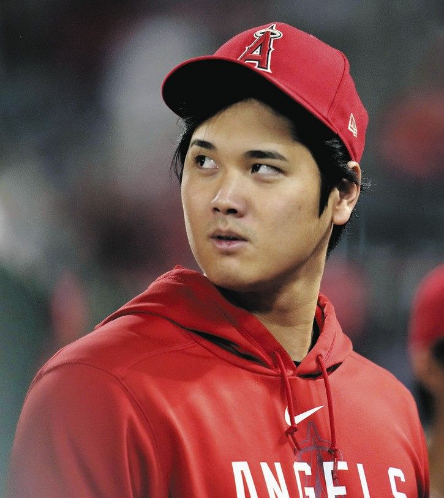
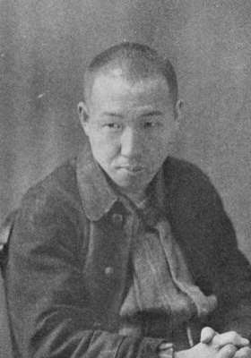

.jpg)
|
戸塚純貴 |
大谷翔平 |
 |
|
1992年7月22日生まれ。岩手県出身。第２３回ジュノン・スーパーボーイ・コンテスト理想の恋人賞受賞。フジテレビ「花ざかりの君たちへイケメン☆パラダイス２０１１」でデビュー。テレビ朝日『仮面ライダーウィザード』、『親ばか青春白書』など多くの作品にでた。仮面ライダーウィザードは2012年の作品ということもあり、僕たちはまだ7～8歳の時ということもあってみていた人は多いのではないか。ぼくが、彼の作品で最も印象に残っているのは“オードリー”の結成までの物語を戸塚純貴と高橋海人が演じたドラマ「だが、情熱はある」だ。本当にオードリーを見ているかのような高い完成度で高い評価を得た。 |
大谷 翔平は、岩手県水沢市出身のプロ野球選手。右投左打。二刀流である。投手としての球速165km/hは藤浪晋太郎佐々木ろうきと並んで日本人最速記録である。また、先発投手兼打者として、NPBで1度のリーグ優勝、1度の日本シリーズ優勝優勝、日本代表では、1度のワールド・ベースボール・クラシック（WBC）優勝に大きく貢献している2021年シーズンでは、2001年のイチロー以来となる日本人史上2人目（アジア人史上でも2人目）のシーズンMVPとシルバースラッガー賞を受賞している |
||
|  |
宮沢賢治 |
芥見下々 |
|
|
1896年8月27日生まれ、岩手県花巻市出身、宮沢 賢治は、日本の詩人、童話作家。 仏教信仰と農民生活に根ざした創作を行った。作品中に登場する架空の理想郷に、郷里の岩手県をモチーフとしてイーハトーヴと名付けたことで知られる。 主な作品に『銀河鉄道の夜』『風の又三郎』『ポラーノの広場』『注文の多い料理店』『どんぐりと山猫』『よだかの星』『雪渡り』『やまなし』『セロひきのゴーシュ』他多数。 どれも一度は聞いたことがあるものばかりだ。 |
（あくたみげげ）は日本の漫画家、岩手県出身、代表作は今若者で知らない人はほぼいないであろう、『呪術廻戦』である。少年時代から『週刊少年ジャンプ』の愛読者であり、特に長期連載された『BREACH』の大ファンであった。実際の呪術廻戦にもBREACHのパロディがちょこちょこ登場している。転校先にジャンプ好きの同級生がおり、そのグループらと絵を描くうちに漫画家になる夢を意識し始める（小学5年生頃）顔出しをNGにしている。コミックスなどの著者画像はイラストで対応し、『呪術廻戦』からは「単眼の猫（上の写真）を用いている。読者からは単眼猫の愛称で親しまれている。 |